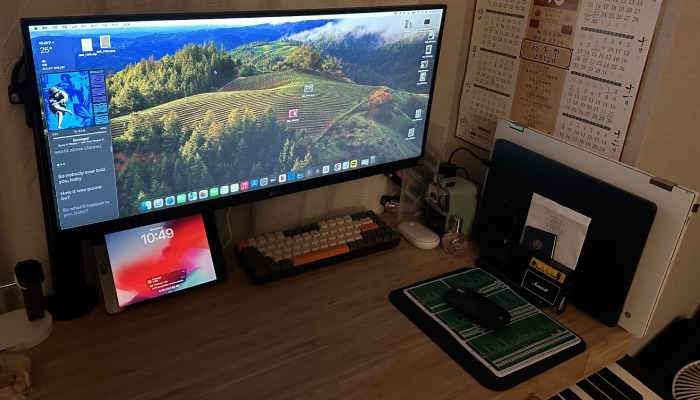
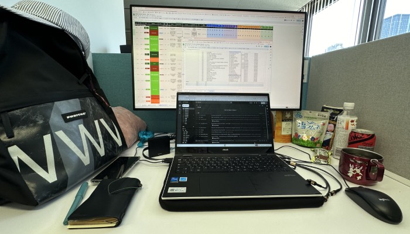
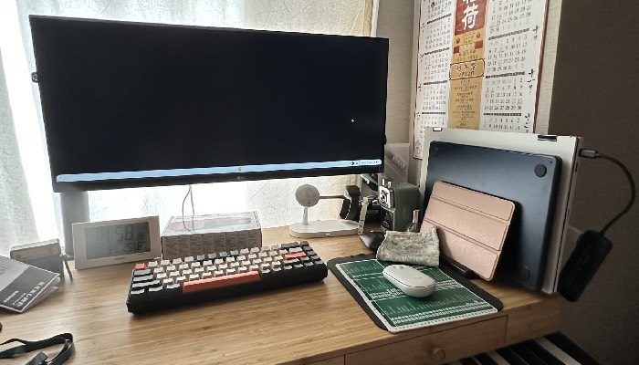
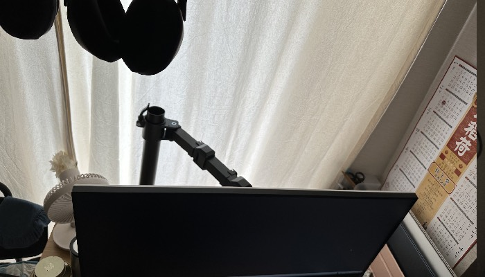
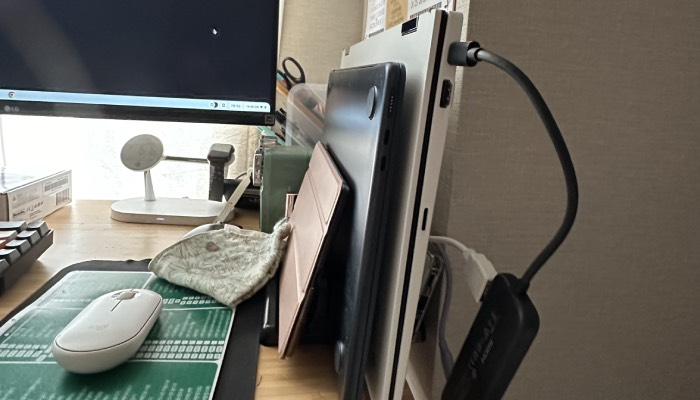

모니터 관련
몇년동안 재택근무하면서도 모니터 살생각을 별로 안했는데..
여기서 살아봤자 얼마나 살겠어? 라며 짐을 늘리고 싶지 않은 마음이 있어서 그런듯.
그치만 회사에서 큰 모니터를 쓰다보니 편한걸..

그래서 최근 저렴한 모니터도 많길래 이것저것 보다가,
엑셀파일 2개씩 보거나 문서 여러개 열어놓고 보는일이 많고,
회사에서도 항상 모니터 위쪽여백은 사용하지 않는경우가 많아서
와이드 모니터가 딱인거 같았음.
29인치인데 생각보다 작아서 더큰걸 샀어도 좋았을뻔 했지만
가격이 올라가는만큼 크게 더 좋을거 같지도 않고 29도 잘보이니 만족함.
생각보다 살때 별 생각이 없었던 모니터에 스피커기능이 의외로 좋은듯.


모니터암에 매달에서 책상 뒤로 밀어놓으니 책상공간도 넓게 활용가능 ㅎ

이렇게 세워놓고 회사크롬북, 내맥북에어 편하게 전환해서 사용가능
그리고 모니터로 보면서 그림그려보니 와 맥북이 좋구나 싶었는데,
모니터로 하니 정말 좋음.ㅋㅋ 머리속으로만 계속 그리는 중인데
좀 꺼낼 때가 된거같은데--;
대학교때 교수님이 머리속으로만 그림그리지 마라고 우리들한테 잔소리하셨던거 생각난다 ㅋㅋ